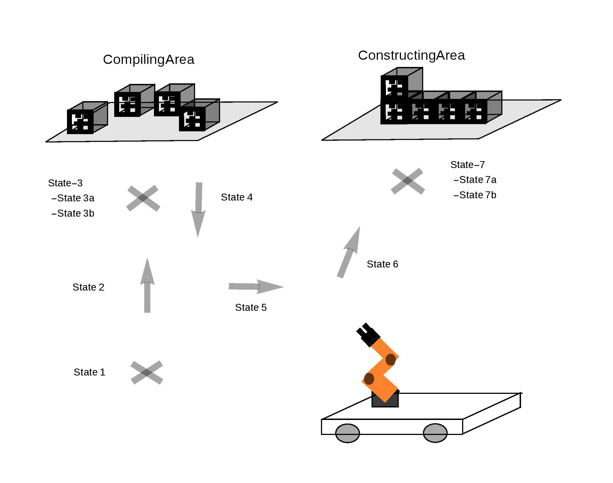

Project Goal
The overall goal of our project was to develop a system that used the Kuka youBot to build designed structures out of building blocks. For this project, the youBot will need to design a structure that it would like to build (e.g. a tower or a pyramid), develop a plan of how to build it and then carry out that plan. To do so, the youBot will need to be able to navigate to a designated 'collection area' in order to pick up unused building blocks. It will then need to use it's onboard arm to pick up and carry the building block to a designated 'building area', where it will strategically place the block based on the original plan. The youBot will also need to be able to recognize when it has completed building it structure.
Team
Alex Broad (@asbroad)
Nuruallah Gulmus (@elmuhn)
Guilherme Klink (@guiklink)
Yue Sun (@hereissunyue)
Workspace and Materials
 The workspace is a subsection of D110 in the Technological Institute. The collection and building areas are the bottom and top of a paper ream box, respectively. The blocks we are using to build the structures are 2"x2"x2" wood blocks.
The workspace is a subsection of D110 in the Technological Institute. The collection and building areas are the bottom and top of a paper ream box, respectively. The blocks we are using to build the structures are 2"x2"x2" wood blocks.
Project Decomposition
We broke the project up into the following four parts. The State Manager which will develop the design the structure and develop the plan for how to build it. It will also manage the other nodes. The Navigation package which will navigate between the collection and build areas. It should be capable of dynamically replanning the youBot's path between the two designated areas to avoid obstacles. The Block Recognition package which will locate the blocks in the building and collection areas. It should locate each building block with high fidelity so that the robotic arm can succesfully pick up the block. And lastly, the Arm Dynamics package which will pick up unused blocks and strategically place them in the structure.State Manager
Design structure, develop plan for how to build it, manage other nodes Navigation Package
For the navigation portion of our project we ended up using a combination of the ROS Nav Stack and a simple motion controller based on sensor readings from the Hokuyo laser scanner. We use the ROS Nav stack to move the youBot to positions parallel to the collection and build areas and then use the simple motion controller to bring the youBot as close as possible to those areas. This allows the robotic arm the largest possible state space with which to interact with the building blocks.ROS Nav Stack
We used the ROS Nav Stack to orient the youBot parallel to both the collection and build areas so that the simple motion controller could then move the robot closer to the platforms. We wanted to be able to generalize this work to other environmental set-ups, such as alternate locations of the collection and build areas. To achieve this goal, we decided to develop a map of our workspace and define the locations of the two important areas in the /map frame. We used the ROS gmapping package to create the map of our workspace which can be seen below.orient_at_collection_area.py and orient_at_build_area.py scripts. Please see the code documentation for more information on this. One modification that we could make to our project would be to extend our tag tracking frame work to dynamically recognize the location of the collection and build areas and then there would be no need for hard coding the locations.
After setting up the ROS Nav Stack we noticed a number of issues with the youBot unintentionally interacting with parts of the environment (such as the collection area) that it should not be. We solved this problem by modifying a number of the ROS Nav Stack parameters. In particular, we modified a number of the ROS Nav Stack parameters to stop the robot from running into objects in the workspace. The most important parameters were the robot_footprint and obstacle_inflation parameters in the local and global costmaps and the goal_tolerance parameters in the local planner. For this project, we used the standard ROS global planner and the eband local planner.
We also noticed large errors in the youBot's ability to localize. We solved this problem by using an idea from the ROS Nav Stack's list of recovery actions. After moving to the desired location, we tell the youBot to rotate 360 degrees around it's z-axis. This helps localize the youBot by increasing the number of sensor readings it has and by letting the youBot see different areas of the workspace (some of which are more feature-rich and imortant for localization). We then resend the first location we sent to the ROS Nav Stack, which often moves a small amount to correct for any errors it had in its first attempt.
Simple Motion Controller
Once the youBot has succesfully navigated to a location parallel to the collection or build area, the simple motion controller is used to move the youBot as close as possile to the to that area. This node works by reading in the sensor value from the left perpendicular sensor reading. That value represents the distance between the left side of the hokoyu laser and the specified platform. Our simple controller runs in a loop and moves the youBot closer to the box at a slow speed. When the distance reading from the sensor gets below a threshold, the youBot stops and has achieved the desired state, directly to the side of the platform. Our next step for this controller would be to implement a P-controller which would allow us to intelligently alter the speed with which the youbot approaches the specified platform.Code Description
To experiment with the navigation portion of this project, you really only need 4 files. The files are as follows.
launch/
.../move_base_eband_small.launch - launch laser scanner, youbot driver, move base, map server, amcl
scripts/
.../orient_at_collection_area.py - spend specified /map location to nav stack, rotate 360 degrees in place, send same location a second time
.../orient_at_build_area.py - spend specified /map location to nav stack, rotate 360 degrees in place, send same location a second time
.../move_to_boxes.py - use laser scan message to move close to side of collection or build areas
$ roslaunch youbot_nav_msr move_base_eband_small.launch
$ rosrun youbot_nav_msr orient_at_collection_area.py
$ rosrun youbot_nav_msr move_to_boxes.py
$ rosrun youbot_nav_msr orient_at_build_area.py
$ rosrun youbot_nav_msr move_to_boxes.py
scripts/
.../rotate_in_place.py - rotate 360 degrees in place (i.e. around the z-axis)
.../move_away_from_boxes.py - move a small set distance away from either box (moves in the negative direction along the youbot's y-axis)
.../move_between_start_and_goal.py - moves a set distance between the two boxes (i.e. you start in front of one of the two areas and move to be in front of the other). this is based on a set distance and will only work if you start with the youbot inside the red tape in Tech D110.